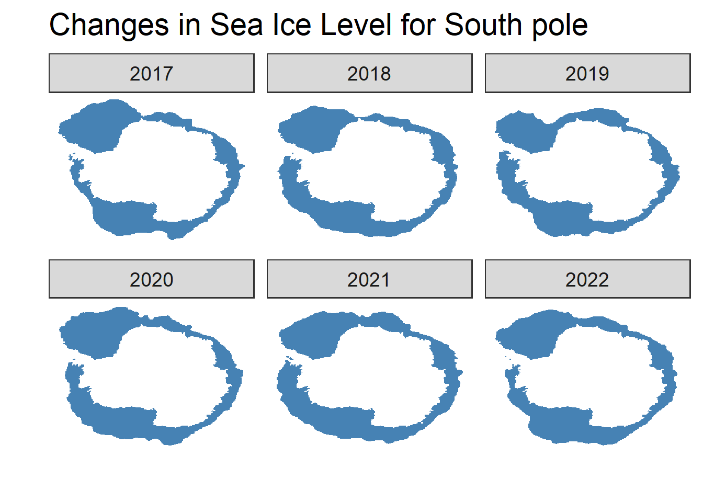
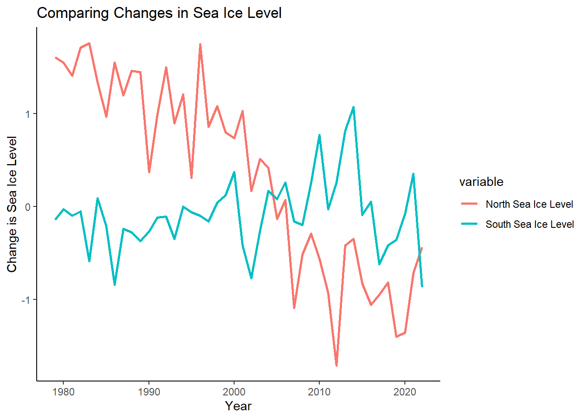
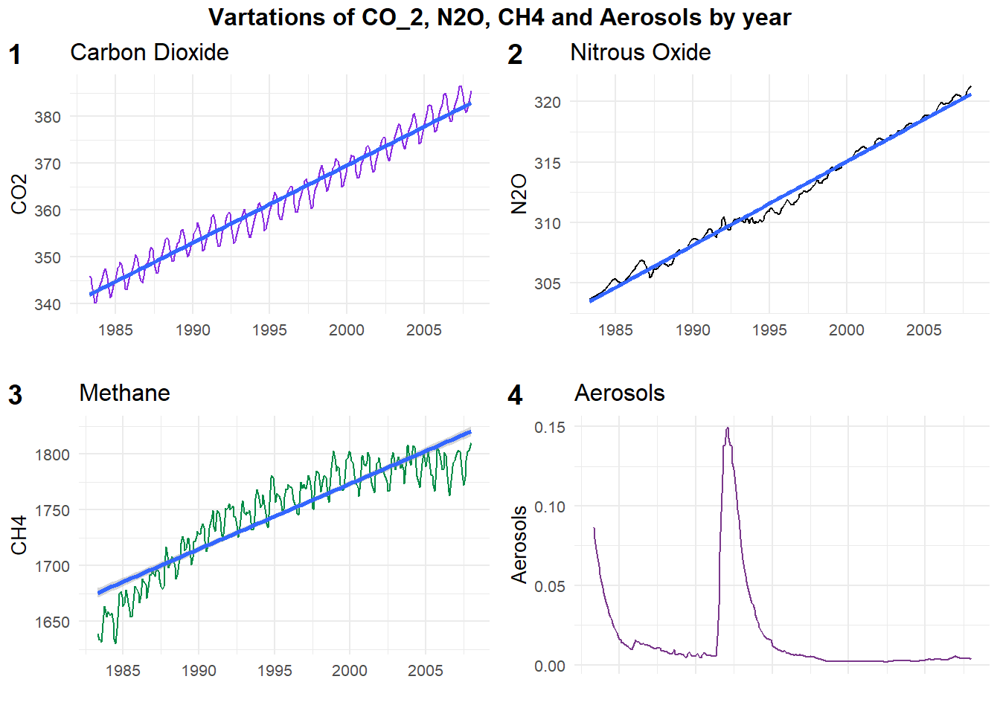
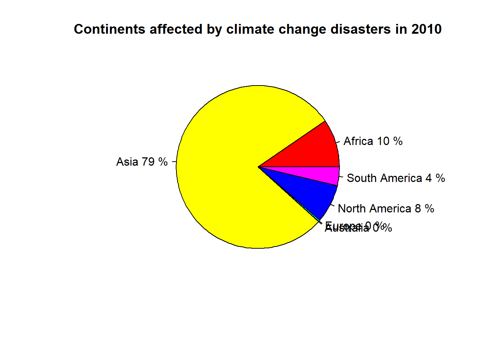
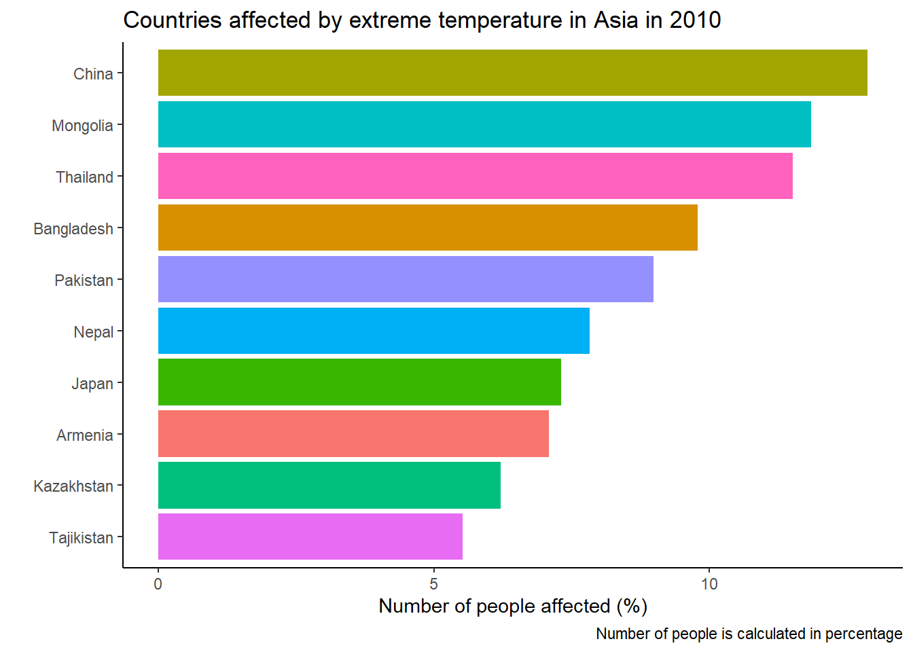
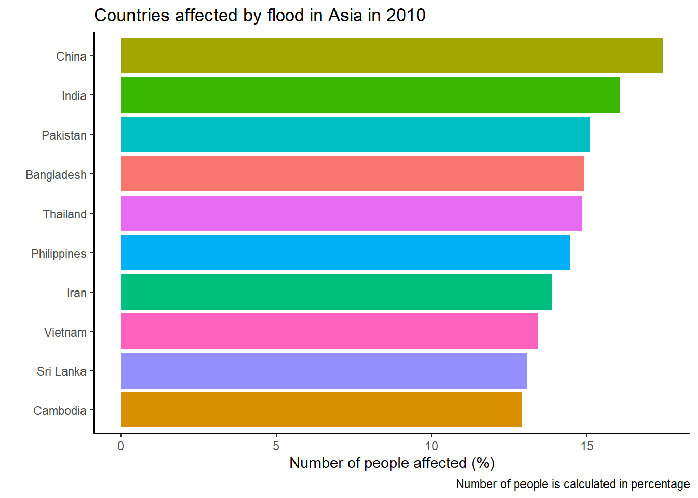

# These are the packages used in the report# Import required packagelibrary(tidyverse)library(dplyr)library(ggplot2)library(plotly)library("RColorBrewer")library(skimr)library("zoo")library(plotly) #world maplibrary(ggridges)library(forcats)options(warn=-1)#library(corrplot)library(reshape2)library(gganimate)
Climate Science has become an intimidating subject matter which is drawing attention in recent days. It is evident that human activities are driving the global warming since mid-20th century. The industrial activities that our modern civilization has taken up leads to raised atmospheric carbon dioxide levels.
UN Climate change states that the past seven years were the warmest on record. Countries that host billions of people and are responsible for up to 70% of human-caused emissions are predicted to get affected the most. This leads to increasing socio-economic impacts. Consequently, making populations vulnerable to extreme weather in different parts of the world.
Climate impacts heading into uncharted territory of destruction by increasingly devastating and leading to many natural calamities. This report will unveil the most inquisitive questions arising which causes and mechanism in global warming along with the human activities leading to natural changes in the environment. As a consequence how humankind is affected, especially children. This study will address the following questions,
What is the mechanism behind the occurrence of climatic change?
Emissions of greenhouse gases over a period of time due to industrial revolution.
Descriptive statistics on factor facilitating Climate change.
Study the trend in natural disaster due to global warming.
Analysis on children vulnerability to climatic change with respective to Children Climate risk index(CCRI) data.
#### Visual 1: adding Year-Month variable as year_dateclimate_change$year_date <-as.yearmon(paste(climate_change$Year, climate_change$Month), "%Y %m")# plotting Temperature-Year ggplot(climate_change, aes(year_date, Temp)) +geom_line(color ="orange", lwd = .8) +geom_smooth(se=FALSE, linetype ="dotted",color ="firebrick") +labs(title ="Rise in Temperature",subtitle ="Monthly rise in temperatures from 1985 to 2022",x ="Year", y ="Temperature") +theme_minimal() +theme(plot.title =element_text(face ="bold",margin =margin(10, 0, 10, 0),size =14)) +theme(panel.grid.minor =element_blank())

Observation :
2.2 Temperature density
Code
#Visual 6: Temperature density# adding right and left hand sided labelsclimate_change <- climate_change %>%mutate(label_rt =if_else(Month ==12& Year%%2==0, as.character(Year), NA_character_)) %>%mutate(label_lt =if_else(Month ==1& Year%%2!=0, as.character(Year), NA_character_))ggplot(climate_change, aes(x = Temp, y =as.factor(Year))) +geom_density_ridges_gradient(aes(fill = ..x..), scale =3, size =0.3, alpha =0.) +geom_vline(xintercept =0.5, alpha =0.5, color ="red", linetype ="dotted") +scale_fill_gradientn(colours =c("#87CEFA", "#FFFFE0", "#FF0000"),name ="Temp") +labs(title ='Temperature density',subtitle ="Temperature Difference in degrees Celsius from the year 1983 to 2022") +theme(legend.position =c(0.9,0.2)) +xlab("Temperature") +ylab("Year") +theme_classic()

Observation:
2.3 Natural disaster - affected/death and injured
Code
##Pre-processing#Selecting only required columns from Natural disaster data for further analysis and visualizationdisaster_data <- natural_disaster_data %>%select(Entity,Year, affected_all_disasters,affected_temperature,affected_flood,affected_wildfire, deaths_all_disasters, deaths_temperature, deaths_flood, deaths_wildfire, injured_all_disasters, injured_temperature, injured_flood, injured_wildfire ) %>%group_by(Entity) %>%filter(Year ==max(Year)) %>%# Take the most recent date per countrygroup_by() %>%#removing groupbydrop_na() #Selecting only continents from the dataset:# Asia, Africa, North America, South America, Antarctica, Europe, and Australia.continent_data <-filter(disaster_data, Entity %in%c("Asia", "Africa", "North America", "South America", "Antarctica","Europe", "Australia"))
Observation:
2.3.1 Natural disaster - Affected due to all disaster
2.3.2 Natural disaster - death due to all disaster
Code
## Add a column indicating whether the category should be highlightedX <- continent_data %>%mutate( ToHighlight =ifelse( Entity =="North America", "yes", "no" ) )X$deaths_all_disasters <-log10(X$deaths_all_disasters) ggplot( X, aes(x = Entity, y=deaths_all_disasters,fill = ToHighlight)) +geom_bar(stat="identity", alpha=.6, width=.6) +#, fill="#bdbdbd",) +coord_flip() +xlab("Continents") +ylab("People death by all disasters") +scale_fill_manual( values =c( "yes"="red", "no"="gray" ), guide =FALSE )

2.3.3 Natural disaster - Injured due to all disaster
Code
## Add a column indicating whether the category should be highlightedX <- continent_data %>%mutate( ToHighlight =ifelse( Entity =="Asia", "yes", "no" ) )X$injured_all_disasters <-log10(X$injured_all_disasters) ggplot( X, aes(x = Entity, y=injured_all_disasters,fill = ToHighlight)) +geom_bar(stat="identity", alpha=.6, width=.6) +#, fill="#bdbdbd",) +coord_flip() +xlab("Continents") +ylab("People injured by all disasters") +scale_fill_manual( values =c( "yes"="red", "no"="gray" ), guide =FALSE )
Observation:
2.4 Country analysis - affected_flood
Code
# Affected all disasterdisaster_data_country <-filter(disaster_data, !(Entity %in%c("World","Upper middle income", "Lower middle income","Low income","High income","Asia", "Africa", "North America", "South America", "Antarctica","Europe", "Australia"))) %>%group_by(Entity) %>%filter(Year ==max(Year)) %>%# Take the most recent date per countrygroup_by() %>%#removing groupbydrop_na() # Checking the top 5 countries having affected_temperature due to disaster:sorted =sort(disaster_data_country$affected_temperature,decreasing =TRUE,index.return=TRUE)$ix#Subseting Top20 countries by April 25thtop5 <- disaster_data_country[sorted[1:5],]top5 <-data.frame(Entity=disaster_data_country$Entity[sorted[1:5]]) # construct a dataframe based on the top 5 countriestop5$Entity <-as.character(top5$Entity) # make the country names as character#To plot:top5_data <- dplyr::inner_join(disaster_data_country,top5,by="Entity") #join two tables together #length(unique(top5_data$Entity)) # Make sure the unique length is 5#Barplot#top5_data$affected_temperature <- log10 (top5_data$affected_temperature)ggplot(top5_data, aes(x =reorder(Entity, +affected_temperature), y=affected_temperature, fill=Entity)) +geom_bar(stat ="identity") +xlab("Country") +ylab("People affected by temperature") +coord_flip()

Observation:
2.5 Country analysis - deaths_wildfire
Code
#deaths_all_disasters# Checking the top 5 countries having affected_temperature due to disaster:sorted =sort(disaster_data_country$deaths_wildfire,decreasing =TRUE,index.return=TRUE)$ix#Subseting Top20 countries by April 25thtop5 <- disaster_data_country[sorted[1:5],]top5 <-data.frame(Entity=disaster_data_country$Entity[sorted[1:5]]) # construct a dataframe based on the top 5 countriestop5$Entity <-as.character(top5$Entity) # make the country names as character#To plot:top5_data <- dplyr::inner_join(disaster_data_country,top5,by="Entity") #join two tables together #length(unique(top5_data$Entity)) # Make sure the unique length is 5#Barplot#top5_data$deaths_wildfire <- log10 (top5_data$deaths_wildfire)ggplot(top5_data, aes(x =reorder(Entity, +deaths_wildfire), y=deaths_wildfire, fill=Entity)) +geom_bar(stat ="identity") +xlab("Country") +ylab("People death by wildfire") +coord_flip()

Observation:
2.6 Country analysis - injured_flood
Code
#deaths_all_disasters# Checking the top 5 countries having affected_temperature due to disaster:sorted =sort(disaster_data_country$injured_flood,decreasing =TRUE,index.return=TRUE)$ix#Subseting Top20 countries by April 25thtop5 <- disaster_data_country[sorted[1:5],]top5 <-data.frame(Entity=disaster_data_country$Entity[sorted[1:5]]) # construct a dataframe based on the top 5 countriestop5$Entity <-as.character(top5$Entity) # make the country names as character#To plot:top5_data <- dplyr::inner_join(disaster_data_country,top5,by="Entity") #join two tables together #length(unique(top5_data$Entity)) # Make sure the unique length is 5#Barplot#top5_data$injured_flood <- log10 (top5_data$injured_flood)ggplot(top5_data, aes(x =reorder(Entity, +injured_flood), y=injured_flood, fill=Entity)) +geom_bar(stat ="identity") +xlab("Country") +ylab("People injured by flood") +coord_flip()

Observation:
2.7 Children climate Risk and Environment analysis
Code
##Pre-processing#Selecting only required columns from CC_ERI data for further analysis and visualizationcceri_data <- cceri_data %>%select(REF_AREA,Geographic.area,Indicator,Value) %>%drop_na()cceri_data <- cceri_data[!apply(is.na(cceri_data) | cceri_data =="", 1, any),]cc_eri_data_new <- cceri_data %>%pivot_wider(names_from ="Indicator",values_from ="Value" ) %>%drop_na() #Checking the number of rows and columns#dim(cc_eri_data_new)#Removing space in the column names of the datasetnames(cc_eri_data_new) <-sub(" ", "_", names(cc_eri_data_new))#summary (cc_eri_data_new)
#corrplot(cor(data),#method = "number",#type = "upper", # show only upper side#)#heatmap(data)
Observation:
Code
#Visualization 7,8,9, 19: #Selecting top 10 countries having high CCRIcceri_data_facet <-filter(cceri_data, REF_AREA %in%c("CAF","COD","BGD","CIV","PHL","UGA","IDN","THA","MYS","SLV"))cceri_data_facet <-filter(cceri_data_facet, Indicator %in%c(#"Communication assets","Education","Coastal floods","Maternal health","Air pollution","Pesticide pollution","Soil and water pollution","Poverty and Inequality","Vector borne diseases","Water scarcity"))p1 <-ggplot( cceri_data_facet, aes( x = REF_AREA, y = Value ) ) +geom_bar( stat ="identity" ) +facet_wrap( ~ Indicator) +xlab("Country code") +ylab("Indicator") +geom_text( aes( label =paste0( Value, "%" ), y = Value ),vjust =1.4, size =2, color ="white" )p1 +theme_bw() +theme( axis.text.x =element_text( angle =90, hjust =1 ) )
Observation:
Observation:
Observation:
2.10 Seasonality in global temperature anomaly
Global temperature
This visualization illustrates the warming in a series of circles, each one portraying a year in the historical climate record spanning 1850 to 2016. As time passes and the planet warms, the circles expand outward
3 Additional visualizations and further analyses with the data
Trend analysis of each country emission level
Children Climate Risk Index
4 Conclusion
The world is entering unprecedented era as climate change drives unprecedented global environmental, societal, and economic disruption. Exploring and analyzing the greenhouse gas emitters due to industrial revolution, while taking proper measures we can protect and support the society, especially the children.
5 Data Source
The data used for this study is extracted from Our World in Data (OWID). The data produced by is collected by UN, World Resources Institute , NASA and made available by Our World in Data.
Emission levels with temperature Link : < https://data.giss.nasa.gov/gistemp/ https://data.giss.nasa.gov/gistemp/tabledata_v4/T_AIRS/GLB.Ts+dSST.csv> Latest Year : 2021 Observations : Variables: 40 Last update: September 6, 2022 Meta data: - GISS Surface Temperature Analysis (GISTEMP v4) - estimate of global surface temperature change - Graphs and tables are updated around the middle of every month using current data files from NOAA GHCN v4(meteorological stations) and ERSST v5 (ocean areas) - These updated files incorporate reports for the previous month and also late reports and corrections for earlier months.
Comparison with one-dimensional global climate models.
Natural disaster Link : https://raw.githubusercontent.com/owid/owid-datasets/master/datasets/Natural%20disasters%20(EMDAT%20–%20decadal)/Natural%20disasters%20(EMDAT%20–%20decadal).csv Latest Year : 2010 Observations: 1604 Variables: 164 Last update: 2021 Meta data: - This data has been aggregated by Our World in Data by country and year based on the raw database of disasters published by EM-DAT, CRED / UCLouvain, Brussels, Belgium – www.emdat.be - EM-DAT publishes comprehensive, global data on each individual disaster event – estimating the number of deaths; people affected; and economic damages, from UN reports; government records; expert opinion; and additional sources. - Our World in Data have calculated annual aggregates, and decadal averages, for each country based on this raw event-by-event dataset. Decadal figures are measured as the annual average over the subsequent ten-year period. This means figures for ‘1900’ represent the average from 1900 to 1909; ‘1910’ is the average from 1910 to 1919 etc.
Luís Roberto Barroso, TECHNOLOGICAL REVOLUTION, DEMOCRATIC RECESSION AND CLIMATE CHANGE: THE LIMITS OF LAW IN A CHANGING WORLD,2019, https://carrcenter.hks.harvard.edu/files/cchr/files/ccdp_2019_009_technology_democracy.pdf
Source Code
---title: "Global climate heading in a Wrong Direction: Mechanism behind the occurrence of climatic change and analysis of Children Climate risk index"author: "Victor & Floriann"format: html: toc: true # This creates the table of context menu toc-depth: 2 # Increase if you want to have subsections in the table of context menu number-sections: true code-fold: true code-tools: truebibliography: references.bib---```{r}#| label: packages#| message: false# These are the packages used in the report# Import required packagelibrary(tidyverse)library(dplyr)library(ggplot2)library(plotly)library("RColorBrewer")library(skimr)library("zoo")library(plotly) #world maplibrary(ggridges)library(forcats)options(warn=-1)#library(corrplot)library(reshape2)library(gganimate)```This slide deck presents the main insights:```{=html}<iframe class="slide-deck" style="border:1px solid lightgray;" width="100%" height="500" src="presentation.html"></iframe>```[Presentation in standalone browser tab.](presentation.html){.internal target="_blank"}Detailed project report## Outline<palign='justify'>*Climate Science* has become an intimidating subject matter which is drawing attention in recent days.It is evident that human activities are driving the global warming since mid-20th century. The industrial activities that our modern civilization has taken up leads to raised atmospheric carbon dioxide levels.</p><palign='justify'>UN Climate change states that the past seven years were the warmest on record. Countries that host billions of people and are responsible for up to 70% of human-caused emissions are predicted to get affected the most. This leads to increasing socio-economic impacts. Consequently, making populations vulnerable to extreme weather in different parts of the world. </p><palign='justify'>Climate impacts heading into uncharted territory of destruction by increasingly devastating and leading to many natural calamities. This report will unveil the most inquisitive questions arising which causes and mechanism in global warming along with the human activities leading to natural changes in the environment. As a consequence how humankind is affected, especially children. This study will address the following questions,</p><palign='justify'>1. What is the mechanism behind the occurrence of climatic change? - Emissions of greenhouse gases over a period of time due to industrial revolution. - Descriptive statistics on factor facilitating Climate change.2. Study the trend in natural disaster due to global warming.3. Analysis on children vulnerability to climatic change with respective to Children Climate risk index(CCRI) data.</p>**Data Source**<br>The Key metrics which contributes to the global climate change is maintained by Our World in Data. Data source will be accessed by from Github API with *R* language. There are 3 datasets which will be used for this study, namely<br>1. Emission levels data and temperature<br> --Link : *<https://github.com/owid/co2-data>* <br> Link : Kaggle Link : *<>*2. Natural disaster data<br> Link : *<https://github.com/owid/owid-datasets/tree/master/datasets/Natural%20disasters%20(EMDAT%20–%20decadal)>* <br>3. Global temperature data<br> Link : *<https://data.giss.nasa.gov/gistemp/ https://data.giss.nasa.gov/gistemp/tabledata_v4/T_AIRS/GLB.Ts+dSST.csv>*4. Children’s Climate and Environment Risk Index<br> Link : *<https://sdmx.data.unicef.org/webservice/data.html>*Code to extract data:```{r}#Code to extract data:climate_change <-read.csv(file ="data/climate_change.csv",TRUE, sep =",", stringsAsFactors =FALSE)cceri_data <-read.csv(file ="data/CC_ERI.csv",TRUE, sep =",", stringsAsFactors =FALSE)natural_disaster_data <-read.csv(file ="data/natural_disaster.csv",TRUE, sep =",", stringsAsFactors =FALSE)```Statistical analysis```{r}#Statistical descriptiondim(climate_change)dim(cceri_data)dim(natural_disaster_data)``````{r}##Summary statistics with SKIM function#skim(climate_change)#skim(cceri_data)#skim(natural_disaster_data)``````{r}##Checking NA values in the datasetapply(is.na(climate_change),2, sum)apply(is.na(cceri_data),2, sum)#apply(is.na(natural_disaster_data),2, sum)```## Main visualization of the data ### Global surface temperature```{r message=FALSE}#### Visual 1: adding Year-Month variable as year_dateclimate_change$year_date <-as.yearmon(paste(climate_change$Year, climate_change$Month), "%Y %m")# plotting Temperature-Year ggplot(climate_change, aes(year_date, Temp)) +geom_line(color ="orange", lwd = .8) +geom_smooth(se=FALSE, linetype ="dotted",color ="firebrick") +labs(title ="Rise in Temperature",subtitle ="Monthly rise in temperatures from 1985 to 2022",x ="Year", y ="Temperature") +theme_minimal() +theme(plot.title =element_text(face ="bold",margin =margin(10, 0, 10, 0),size =14)) +theme(panel.grid.minor =element_blank())```<palign='justify'>Observation : </p>### Temperature density```{r message=FALSE}#Visual 6: Temperature density# adding right and left hand sided labelsclimate_change <- climate_change %>%mutate(label_rt =if_else(Month ==12& Year%%2==0, as.character(Year), NA_character_)) %>%mutate(label_lt =if_else(Month ==1& Year%%2!=0, as.character(Year), NA_character_))ggplot(climate_change, aes(x = Temp, y =as.factor(Year))) +geom_density_ridges_gradient(aes(fill = ..x..), scale =3, size =0.3, alpha =0.) +geom_vline(xintercept =0.5, alpha =0.5, color ="red", linetype ="dotted") +scale_fill_gradientn(colours =c("#87CEFA", "#FFFFE0", "#FF0000"),name ="Temp") +labs(title ='Temperature density',subtitle ="Temperature Difference in degrees Celsius from the year 1983 to 2022") +theme(legend.position =c(0.9,0.2)) +xlab("Temperature") +ylab("Year") +theme_classic()```<palign='justify'>Observation:</p>### Natural disaster - affected/death and injured```{r message=FALSE}##Pre-processing#Selecting only required columns from Natural disaster data for further analysis and visualizationdisaster_data <- natural_disaster_data %>%select(Entity,Year, affected_all_disasters,affected_temperature,affected_flood,affected_wildfire, deaths_all_disasters, deaths_temperature, deaths_flood, deaths_wildfire, injured_all_disasters, injured_temperature, injured_flood, injured_wildfire ) %>%group_by(Entity) %>%filter(Year ==max(Year)) %>%# Take the most recent date per countrygroup_by() %>%#removing groupbydrop_na() #Selecting only continents from the dataset:# Asia, Africa, North America, South America, Antarctica, Europe, and Australia.continent_data <-filter(disaster_data, Entity %in%c("Asia", "Africa", "North America", "South America", "Antarctica","Europe", "Australia"))```<palign='justify'>Observation:</p>#### Natural disaster - Affected due to all disaster```{r message=FALSE}#Barplot - affected_all_disasters## Add a column indicating whether the category should be highlightedX <- continent_data %>%mutate( ToHighlight =ifelse( Entity =="Asia", "yes", "no" ) )X$affected_all_disasters <-log10(X$affected_all_disasters) #ggplot( X, aes(x = reorder(Entity, +affected_all_disasters), y=affected_all_disasters,fill = ToHighlight)) +ggplot( X, aes(x = Entity, y=affected_all_disasters,fill = ToHighlight)) +geom_bar(stat="identity", alpha=.6, width=.6) +#, fill="#bdbdbd",) +coord_flip() +xlab("Continents") +ylab("People affected by all disasters") +scale_fill_manual( values =c( "yes"="red", "no"="gray" ), guide =FALSE ) ```<palign='justify'>Observation:</p>#### Natural disaster - death due to all disaster```{r message=FALSE}## Add a column indicating whether the category should be highlightedX <- continent_data %>%mutate( ToHighlight =ifelse( Entity =="North America", "yes", "no" ) )X$deaths_all_disasters <-log10(X$deaths_all_disasters) ggplot( X, aes(x = Entity, y=deaths_all_disasters,fill = ToHighlight)) +geom_bar(stat="identity", alpha=.6, width=.6) +#, fill="#bdbdbd",) +coord_flip() +xlab("Continents") +ylab("People death by all disasters") +scale_fill_manual( values =c( "yes"="red", "no"="gray" ), guide =FALSE ) ```#### Natural disaster - Injured due to all disaster```{r message=FALSE}## Add a column indicating whether the category should be highlightedX <- continent_data %>%mutate( ToHighlight =ifelse( Entity =="Asia", "yes", "no" ) )X$injured_all_disasters <-log10(X$injured_all_disasters) ggplot( X, aes(x = Entity, y=injured_all_disasters,fill = ToHighlight)) +geom_bar(stat="identity", alpha=.6, width=.6) +#, fill="#bdbdbd",) +coord_flip() +xlab("Continents") +ylab("People injured by all disasters") +scale_fill_manual( values =c( "yes"="red", "no"="gray" ), guide =FALSE ) ```<palign='justify'>Observation:</p>### Country analysis - affected_flood```{r message=FALSE}# Affected all disasterdisaster_data_country <-filter(disaster_data, !(Entity %in%c("World","Upper middle income", "Lower middle income","Low income","High income","Asia", "Africa", "North America", "South America", "Antarctica","Europe", "Australia"))) %>%group_by(Entity) %>%filter(Year ==max(Year)) %>%# Take the most recent date per countrygroup_by() %>%#removing groupbydrop_na() # Checking the top 5 countries having affected_temperature due to disaster:sorted =sort(disaster_data_country$affected_temperature,decreasing =TRUE,index.return=TRUE)$ix#Subseting Top20 countries by April 25thtop5 <- disaster_data_country[sorted[1:5],]top5 <-data.frame(Entity=disaster_data_country$Entity[sorted[1:5]]) # construct a dataframe based on the top 5 countriestop5$Entity <-as.character(top5$Entity) # make the country names as character#To plot:top5_data <- dplyr::inner_join(disaster_data_country,top5,by="Entity") #join two tables together #length(unique(top5_data$Entity)) # Make sure the unique length is 5#Barplot#top5_data$affected_temperature <- log10 (top5_data$affected_temperature)ggplot(top5_data, aes(x =reorder(Entity, +affected_temperature), y=affected_temperature, fill=Entity)) +geom_bar(stat ="identity") +xlab("Country") +ylab("People affected by temperature") +coord_flip()```<palign='justify'>Observation:</p>### Country analysis - deaths_wildfire```{r message=FALSE}#deaths_all_disasters# Checking the top 5 countries having affected_temperature due to disaster:sorted =sort(disaster_data_country$deaths_wildfire,decreasing =TRUE,index.return=TRUE)$ix#Subseting Top20 countries by April 25thtop5 <- disaster_data_country[sorted[1:5],]top5 <-data.frame(Entity=disaster_data_country$Entity[sorted[1:5]]) # construct a dataframe based on the top 5 countriestop5$Entity <-as.character(top5$Entity) # make the country names as character#To plot:top5_data <- dplyr::inner_join(disaster_data_country,top5,by="Entity") #join two tables together #length(unique(top5_data$Entity)) # Make sure the unique length is 5#Barplot#top5_data$deaths_wildfire <- log10 (top5_data$deaths_wildfire)ggplot(top5_data, aes(x =reorder(Entity, +deaths_wildfire), y=deaths_wildfire, fill=Entity)) +geom_bar(stat ="identity") +xlab("Country") +ylab("People death by wildfire") +coord_flip()```<palign='justify'>Observation:</p>### Country analysis - injured_flood```{r message=FALSE}#deaths_all_disasters# Checking the top 5 countries having affected_temperature due to disaster:sorted =sort(disaster_data_country$injured_flood,decreasing =TRUE,index.return=TRUE)$ix#Subseting Top20 countries by April 25thtop5 <- disaster_data_country[sorted[1:5],]top5 <-data.frame(Entity=disaster_data_country$Entity[sorted[1:5]]) # construct a dataframe based on the top 5 countriestop5$Entity <-as.character(top5$Entity) # make the country names as character#To plot:top5_data <- dplyr::inner_join(disaster_data_country,top5,by="Entity") #join two tables together #length(unique(top5_data$Entity)) # Make sure the unique length is 5#Barplot#top5_data$injured_flood <- log10 (top5_data$injured_flood)ggplot(top5_data, aes(x =reorder(Entity, +injured_flood), y=injured_flood, fill=Entity)) +geom_bar(stat ="identity") +xlab("Country") +ylab("People injured by flood") +coord_flip()```<palign='justify'>Observation:</p>### Children climate Risk and Environment analysis```{r message=FALSE}##Pre-processing#Selecting only required columns from CC_ERI data for further analysis and visualizationcceri_data <- cceri_data %>%select(REF_AREA,Geographic.area,Indicator,Value) %>%drop_na()cceri_data <- cceri_data[!apply(is.na(cceri_data) | cceri_data =="", 1, any),]cc_eri_data_new <- cceri_data %>%pivot_wider(names_from ="Indicator",values_from ="Value" ) %>%drop_na() #Checking the number of rows and columns#dim(cc_eri_data_new)#Removing space in the column names of the datasetnames(cc_eri_data_new) <-sub(" ", "_", names(cc_eri_data_new))#summary (cc_eri_data_new)```<palign='justify'>Observation:</p>```{r message=FALSE}#Renaming the variables:colnames(cc_eri_data_new)[1] <-"ISO_Code"colnames(cc_eri_data_new)[4] <-"CCRI"colnames(cc_eri_data_new)[6] <-"Child_health_nutrition"colnames(cc_eri_data_new)[9] <-"Climate_environmental_shocks"colnames(cc_eri_data_new)[21] <-"Soil_water_pollution"colnames(cc_eri_data_new)[22] <-" Poverty_Inequality"colnames(cc_eri_data_new)[23] <-"Social_protection_conomic_empowerment"colnames(cc_eri_data_new)[25] <-"Vector_borne_diseases"```<palign='justify'>Observation:</p>### Children Climate Risk Index (CCRI) - Worldwide```{r message=FALSE}cc_eri_data_new$CCRI <-as.numeric(as.character(cc_eri_data_new$CCRI))#World map of country with CCRI:l <-list(color =toRGB("black"), width =0.5) # light black boundaries# specify map projection/optionsg <-list(showframe =FALSE,showcoastlines =FALSE,projection =list(type ='robinson'))fig <-plot_geo(cc_eri_data_new)fig <- fig %>%add_trace(z =~CCRI, color =~CCRI, colors ='Reds',text =~Geographic.area, locations =~ISO_Code, marker =list(line = l))fig <- fig %>%colorbar(title ='CCRI', tickprefix ='')fig <- fig %>%layout(title ='Children Climate Risk Index (CCRI) - Worldwide',geo = g)fig```<palign='justify'>Observation:</p>### Children health- Worldwide```{r message=FALSE}cc_eri_data_new$Child_health <-as.numeric(as.character(cc_eri_data_new$Child_health))cc_eri_data_new <- cc_eri_data_new %>%drop_na() #removing na values in the dataset#World map of country with heatwaves:l <-list(color =toRGB("black"), width =0.5) # light black boundaries# specify map projection/optionsg <-list(showframe =FALSE,showcoastlines =FALSE,projection =list(type ='Mercator'))fig <-plot_geo(cc_eri_data_new)fig <- fig %>%add_trace(z =~Child_health, color =~Child_health, colors ='Purples',text =~Geographic.area, locations =~ISO_Code, marker =list(line = l))fig <- fig %>%colorbar(title ='Child Health', tickprefix ='')fig <- fig %>%layout(title ='Child Health - Worldwide',geo = g)fig```<palign='justify'>Observation:</p>```{r message=FALSE}cc_eri_data_new$Child_vulnerability <-as.numeric(as.character(cc_eri_data_new$Child_vulnerability))cc_eri_data_new <- cc_eri_data_new %>%drop_na() #removing na values in the dataset#World map of country with heatwaves:l <-list(color =toRGB("black"), width =0.5) # light black boundaries# specify map projection/optionsg <-list(showframe =FALSE,showcoastlines =FALSE,projection =list(type ='Mercator'))fig <-plot_geo(cc_eri_data_new)fig <- fig %>%add_trace(z =~Child_vulnerability, color =~Child_vulnerability, colors ='Blues',text =~Geographic.area, locations =~ISO_Code, marker =list(line = l))fig <- fig %>%colorbar(title ='Child Vulnerability', tickprefix ='')fig <- fig %>%layout(title ='Child Vulnerability - Worldwide',geo = g)fig``````{r message=FALSE}#Visual 5: Heatwave exposure each year cc_eri_data_new$Child_health_nutrition <-as.numeric(as.character(cc_eri_data_new$Child_health_nutrition))cc_eri_data_new <- cc_eri_data_new %>%drop_na() #removing na values in the dataset#World map of country with heatwaves:l <-list(color =toRGB("black"), width =0.5) # light black boundaries# specify map projection/optionsg <-list(showframe =FALSE,showcoastlines =FALSE,projection =list(type ='Mercator'))fig <-plot_geo(cc_eri_data_new)fig <- fig %>%add_trace(z =~Child_health_nutrition, color =~Child_health_nutrition, colors ='viridis',text =~Geographic.area, locations =~ISO_Code, marker =list(line = l))fig <- fig %>%colorbar(title ='Child health nutrition', tickprefix ='')fig <- fig %>%layout(title ='Child health nutrition - Worldwide',geo = g)fig```#### Correlation map```{r message=FALSE}# Correlation mapcc_eri_data_new$Child_nutrition <-as.numeric(as.character(cc_eri_data_new$Child_nutrition))cc_eri_data_new$Climate_environmental_shocks <-as.numeric(as.character(cc_eri_data_new$Climate_environmental_shocks))cc_eri_data_new$Education <-as.numeric(as.character(cc_eri_data_new$Education))cc_eri_data_new$Coastal_floods <-as.numeric(as.character(cc_eri_data_new$Coastal_floods))cc_eri_data_new$Heatwaves <-as.numeric(as.character(cc_eri_data_new$Heatwaves))cc_eri_data_new$Soil_water_pollution <-as.numeric(as.character(cc_eri_data_new$Soil_water_pollution))cc_eri_data_new$Vector_borne_diseases <-as.numeric(as.character(cc_eri_data_new$Vector_borne_diseases))cc_eri_data_new$Water_scarcity <-as.numeric(as.character(cc_eri_data_new$Water_scarcity))cc_eri_corr <- cc_eri_data_new %>%drop_na() data <-cor(cc_eri_corr[sapply(cc_eri_corr,is.numeric)])data1 <-melt(data)ggplot(data1, aes(x = Var1,y = Var2,fill = value))+geom_tile() +theme( axis.text.x =element_text( angle =90, hjust =1 ) )#corrplot(cor(data),#method = "number",#type = "upper", # show only upper side#)#heatmap(data) ```<palign='justify'>Observation:</p>```{r dpi = 300}#Visualization 7,8,9, 19: #Selecting top 10 countries having high CCRIcceri_data_facet <-filter(cceri_data, REF_AREA %in%c("CAF","COD","BGD","CIV","PHL","UGA","IDN","THA","MYS","SLV"))cceri_data_facet <-filter(cceri_data_facet, Indicator %in%c(#"Communication assets","Education","Coastal floods","Maternal health","Air pollution","Pesticide pollution","Soil and water pollution","Poverty and Inequality","Vector borne diseases","Water scarcity"))p1 <-ggplot( cceri_data_facet, aes( x = REF_AREA, y = Value ) ) +geom_bar( stat ="identity" ) +facet_wrap( ~ Indicator) +xlab("Country code") +ylab("Indicator") +geom_text( aes( label =paste0( Value, "%" ), y = Value ),vjust =1.4, size =2, color ="white" )p1 +theme_bw() +theme( axis.text.x =element_text( angle =90, hjust =1 ) )```<palign='justify'>Observation:</p>```{r message=FALSE}```<palign='justify'>Observation:</p>```{r message=FALSE}```<palign='justify'>Observation:</p>### Seasonality in global temperature anomaly<palign='justify'>This visualization illustrates the warming in a series of circles, each one portraying a year in the historical climate record spanning 1850 to 2016. As time passes and the planet warms, the circles expand outward</p>## Additional visualizations and further analyses with the data1. Trend analysis of each country emission level2. Children Climate Risk Index## Conclusion<palign='justify'>The world is entering unprecedented era as climate change drives unprecedented global environmental, societal, and economic disruption. Exploring and analyzing the greenhouse gas emitters due to industrial revolution, while taking proper measures we can protect and support the society, especially the children.</p>## Data Source {.appendix}<palign='justify'>The data used for this study is extracted from *Our World in Data (OWID)*.The data produced by is collected by UN, World Resources Institute , NASA and made available by Our World in Data. </p>1. Emission levels with temperature <br> Link : *< https://data.giss.nasa.gov/gistemp/ https://data.giss.nasa.gov/gistemp/tabledata_v4/T_AIRS/GLB.Ts+dSST.csv>* <br> Latest Year : 2021 <br> Observations : <br> Variables: 40 <br> Last update: September 6, 2022<br> Meta data: - GISS Surface Temperature Analysis (GISTEMP v4) - estimate of global surface temperature change - Graphs and tables are updated around the middle of every month using current data files from NOAA GHCN v4(meteorological stations) and ERSST v5 (ocean areas) - These updated files incorporate reports for the previous month and also late reports and corrections for earlier months. - Comparison with one-dimensional global climate models. 2. Natural disaster <br> Link : *<https://raw.githubusercontent.com/owid/owid-datasets/master/datasets/Natural%20disasters%20(EMDAT%20–%20decadal)/Natural%20disasters%20(EMDAT%20–%20decadal).csv>* <br> Latest Year : 2010 <br> Observations: 1604 <br> Variables: 164 <br> Last update: 2021 <br> Meta data: - This data has been aggregated by Our World in Data by country and year based on the raw database of disasters published by EM-DAT, CRED / UCLouvain, Brussels, Belgium – www.emdat.be - EM-DAT publishes comprehensive, global data on each individual disaster event – estimating the number of deaths; people affected; and economic damages, from UN reports; government records; expert opinion; and additional sources. - Our World in Data have calculated annual aggregates, and decadal averages, for each country based on this raw event-by-event dataset.Decadal figures are measured as the annual average over the subsequent ten-year period. This means figures for ‘1900’ represent the average from 1900 to 1909; ‘1910’ is the average from 1910 to 1919 etc.3. Children’s Climate and Environment Risk Index (CCRI) <br> Metadata: Link : *<https://github.com/owid/owid-datasets/tree/master/datasets/Global%20temperature%20anomaly%20-%20Met%20Office%20(HadCRUT4)>* <br> Observations: 4075 <br> Variables: 4 <br> Last update: 2022 <br> CCRI depends on two components: - Pillar 1 measures exposure to climate and environmental shocks and stresses. - Pillar 2 captures child vulnerability. The data is updated regularly and most metrics are published on an annual basis.## References {.unnumbered .appendix}::: {}James H. Stock, *Climate Change, Climate Policy, and Economic Growth, July 1, 2019* <https://heep.hks.harvard.edu/files/heep/files/dp_85_stock.pdf>Luís Roberto Barroso, *TECHNOLOGICAL REVOLUTION, DEMOCRATIC RECESSION AND CLIMATE CHANGE: THE LIMITS OF LAW IN A CHANGING WORLD,2019*, https://carrcenter.hks.harvard.edu/files/cchr/files/ccdp_2019_009_technology_democracy.pdf:::